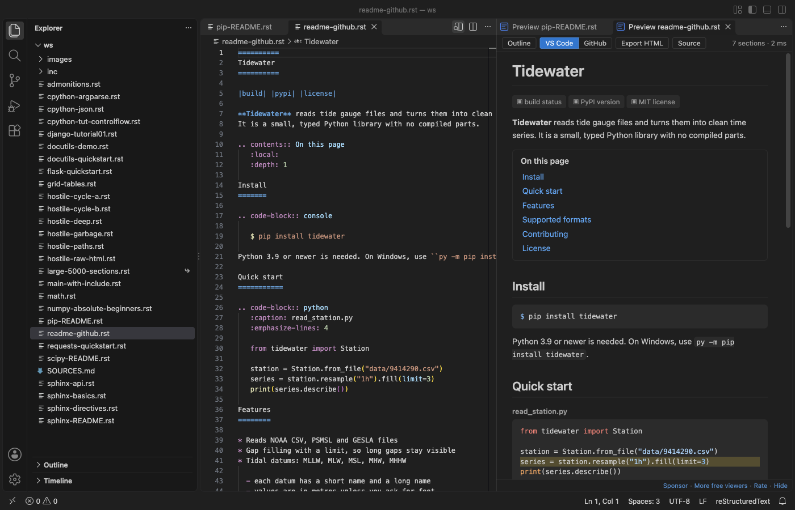

Open files in VS Code and Cursor / Docs and diagrams
Preview a reStructuredText (.rst) file in VS Code
Most RST previews for VS Code need Python with docutils or a full Sphinx project, and show an empty window when Python is missing. The free RST Preview by Zovo renders reStructuredText itself. Open a .rst file and press Ctrl+K V (Cmd+K V on macOS). The preview opens beside the editor, updates as you type and scrolls with it.
Free, MIT license. Extension ID zovo.zovo-rst-preview, version 0.1.0. Needs VS Code 1.90.0 or newer.

Steps in VS Code
- Install RST Preview from the Marketplace, or press Ctrl+P (Cmd+P on macOS) and run
ext install zovo.zovo-rst-preview. - Open a
.rstfile. - Click the preview button at the top right of the editor, or press Ctrl+K V (Cmd+K V on macOS). Ctrl+Shift+V opens the preview in place of the editor.
- Double-click a spot in the preview to jump to that line in the source.
- Use the toolbar to show the Outline, switch between the VS Code and GitHub looks, or export one HTML file.
Steps in Cursor, Windsurf or VSCodium
- Open the Extensions view with Ctrl+Shift+X (Cmd+Shift+X on macOS).
- Search for
zovo.zovo-rst-previewand click Install. Cursor, Windsurf and VSCodium install from Open VSX, where it is published aszovo/zovo-rst-preview. - If your editor has no gallery, download the .vsix from the Open VSX page and run "Extensions: Install from VSIX...".
- Then use it the same way as in VS Code.
What RST Preview handles
- Grid tables with row and column spans, simple tables,
csv-tableandlist-table. - Admonitions, footnotes, citations, substitutions and all list types.
- Code blocks in color, math with KaTeX, local pictures and figures, and
includeinside your workspace folder. - Sphinx directives such as
toctreeandautomoduleshow as labelled boxes, and roles such as:ref:show as links or code, so the page never turns into an error. - Problems such as a title underline that is too short or a broken table show in the Problems panel.
What it does not do
- It is not Sphinx. It does not run
conf.py, extensions or autodoc, so text that Sphinx builds from Python code is not shown. - A
:ref:to a label in another file shows as plain text. - Remote pictures, such as badges, show as a small label, because the preview loads nothing from the network.
- Files over 20 MB show a Render anyway button instead of rendering at once.
In JetBrains IDEs (IntelliJ IDEA, PyCharm, WebStorm, CLion and others)
- No Zovo plugin for JetBrains IDEs. RST Preview is for VS Code and editors built on it. In PyCharm and the other JetBrains IDEs, use one of these plugins.
- ReStructuredText. 1.7 million downloads. Its description says it enables support for reStructuredText files (*.rst).
- reStructuredText Pro. 1,274 downloads. Its description says it needs no Python and has a live HTML preview.
Other options
- reStructuredText (
lextudio.restructuredtext, 790,137 installs, on Open VSX). Pick this one for a full Sphinx build in the preview and IntelliSense. It uses Python. Its own description: "reStructuredText language support (RST/ReST linter, preview, IntelliSense and more)". - Preview (
searKing.preview-vscode, 792,036 installs, on Open VSX). Its own description: "A Markdown, ReStructured Text, HTML, Jade, Pug, Mermaid, Image previewer." - reStructuredText Preview (
tht13.rst-vscode, 167,477 installs, not on Open VSX). Its own description: "Provides ability to preview RST documents." Not on Open VSX.
Install counts and Open VSX status were checked on 9 November 2026. Descriptions in quotes are the extensions' own.
Questions
Do I need Python, docutils or Sphinx?
No. RST Preview renders the file inside VS Code. You install nothing else and set up no conf.py.
Will my Sphinx docs show exactly as Sphinx builds them?
No. Sphinx directives show as labelled boxes and roles as links or code, so you can read the page, but autodoc text and cross-file references are not filled in. Run Sphinx for the final build.
Can I export the preview?
Yes. Export HTML writes one file with the pictures, math fonts and code colors inside. It opens in any browser with no network.
More about RST Preview
Read the RST Preview page for every feature and setting, or the source code on GitHub.
Related guides
- Read an RTF file in VS Code
- Preview Mermaid diagrams in VS Code
- Preview an SVG file in VS Code
- Open a .docx Word file in VS Code
Support this work
If this extension saves you time, you can support the work on GitHub Sponsors. Monthly tiers start at $5, and one-time tiers start at $15. Sponsorship is optional, and the tool works the same without it.